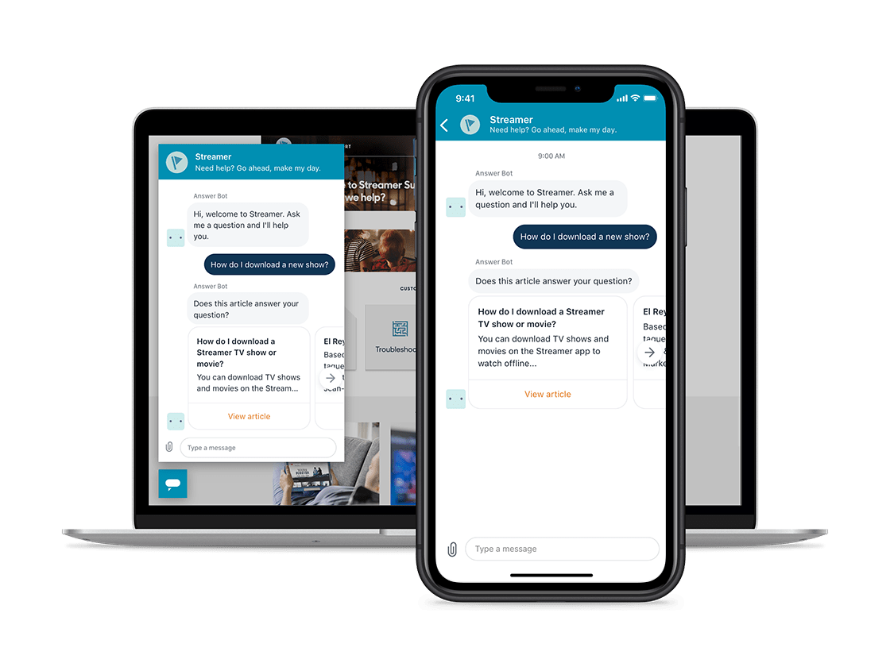
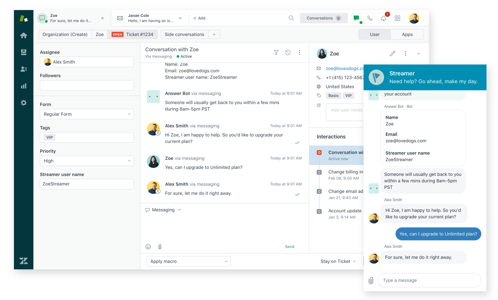

Strike up a
conversation on
live chat
live chat Reach your customers instantly via web, mobile on live
chat and messaging
Live chat and messaging with
Aroma Suite
Formerly known as Aroma Chat, messaging provides you with the flexibility to have live chats in real-
time and ongoing conversations that provide a full conversation history at all times with your
customers. Available through the Aroma
Suite, messaging gives your team the benefits of live chat
software and more. It lets you deliver rich conversational experiences that are connected across your
web, mobile or social apps. It's easy to automate and fast to scale for
every customer need.
Let the good convos flow
Aroma messaging gives you access to real-time or ongoing support. Add live chat to your website or
mobile app and start talking to customers in minutes. It lets you help customers in real time, which
increases customer satisfaction. And
satisfied customers are happier customers.

Make yourself available to chat
Live chat and messaging create a personal connection with customers looking for support. It’s a fast
and effective way to offer help—without interrupting their experience. It can help your business in the
following ways.
- Be there for your customers in the moment: Anticipate customer questions and offer help when
and wherethey need it most with chat support.
- Raise your sales: Customers are 3X more likely to make a purchase when you reach out with a
live chat.
- Less wait, more happy: Live chat and messaging let agents help more customers in less time,
which means happier customers more of the time.

Get the most out of real-time
support with Aroma messaging
Add modern messaging with live chat capabilities to your website or mobile app so customers can
have rich conversations without having to repeat themselves. Aroma messaging provides your team
with capabilities to get up and running, and
organized quickly.
- Engage on your terms: on web and mobile with embeddables that can be customized to your
brand’s unique needs.
- Have real-time and persistent conversations: and keep the conversation going across devices
and channels with full conversation history at all times.
- Deliver rich experiences: with support for typing indicators, delivery events and rich message
types like emojis, GIFs, forms, carousels and quick replies.
- Automate responses: using bots to resolve issues or help escalate a customer to the right agent
on any channel.
- Bring on the context: so agents can see the full picture (including the customer's profile and past
history) and provide faster, more personalized responses from an agent workspace optimized for
delivering support through
live chat and messaging.
- Organize your conversations: with business rules and workflows like routing, reporting, tags and
more to efficiently deliver the best CX.
FOODPANDA
Foodpanda sees the highest satisfaction ratings from live chat
which they provide online and embedded in their app
Read customer story
Dive in deeper
Adding live chat and messaging cantake your customer service to the next level
Learn more about the endless possibilities with Aroma.
All Rights Reserved © Mohamed Ibrahim 2021